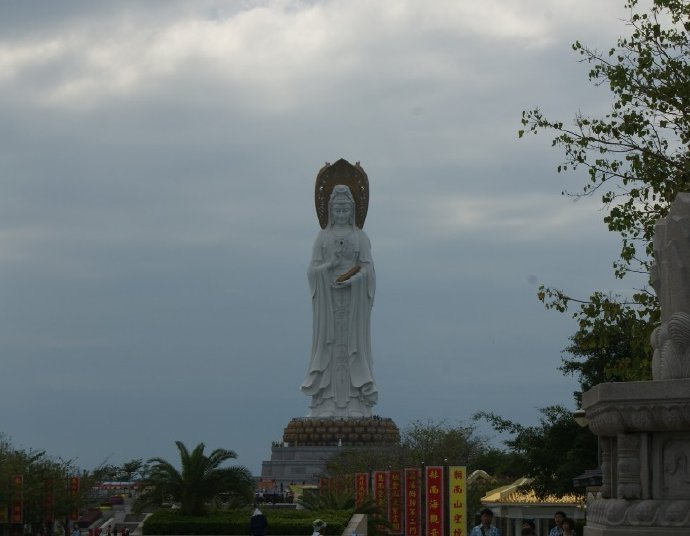

在海南这几天，气候宜人，透过酒店的窗户看到窗外，海风吹着一排排阔达的椰子树叶，阳光透明的照在刚下雨的城市，街上行人的节奏慢慢悠悠。很想坐在阳台的椅子上就这样躺一个下午。但是还来不及品味这份悠闲就要赶往下一个通告。
海南的歌友会，很多铃铛来看我，很感动。我喜欢这样的气氛，喜欢唱歌给喜欢我的歌的人听，唱的声嘶力竭大汗淋漓也没有关系。
今天终于悠闲下来，跑到三亚，推开酒店窗户，想到的第一句话就是面朝大海春暖花开。太美好了。今天也去南海拜了观音，许下了心愿希望可以在实现的时候再来海南还愿，也给铃铛们许愿了，希望大家都可以平平安安的。
大部分的情况下，我不够自信，觉得自己没有尽全力做的不够好，更不用说自大了。所以看到了一些留言，觉得是你们太抬举我了。不管怎么样，感谢你们对我说的每一句话。我也希望我可以努力做的更好。
